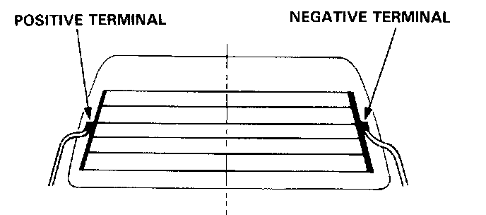

Component Tests and General Diagnostics
Function TestCAUTION: Be careful not to scratch or damage the defogger wires with the tester probe end.
1. Check for voltage between the positive terminal and body ground with the ignition switch and the defogger switch ON. There should be battery voltage.
- If there is no voltage, check for:
Faulty defogger relay.
An open in the BLK/GRN or YEL/GRN wire.
If there is battery voltage, go to step 2.

2. Check for continuity between the negative terminal and body ground. If no continuity, check for open in the defogger ground wire.
3. Connect the voltmeter positive probe to the center of each defogger wire, and the negative probe to the negative terminal. There should be approximately 6 with the ignition switch and the defogger switch ON.
- If the voltage is as specified, the defogger wire is OK.
- If there is battery voltage, the defogger wire is broken in the negative side of the center.
- If there is no voltage the defogger wire is broken in the positive side of the center.